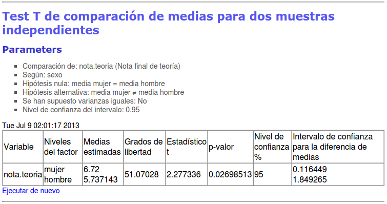
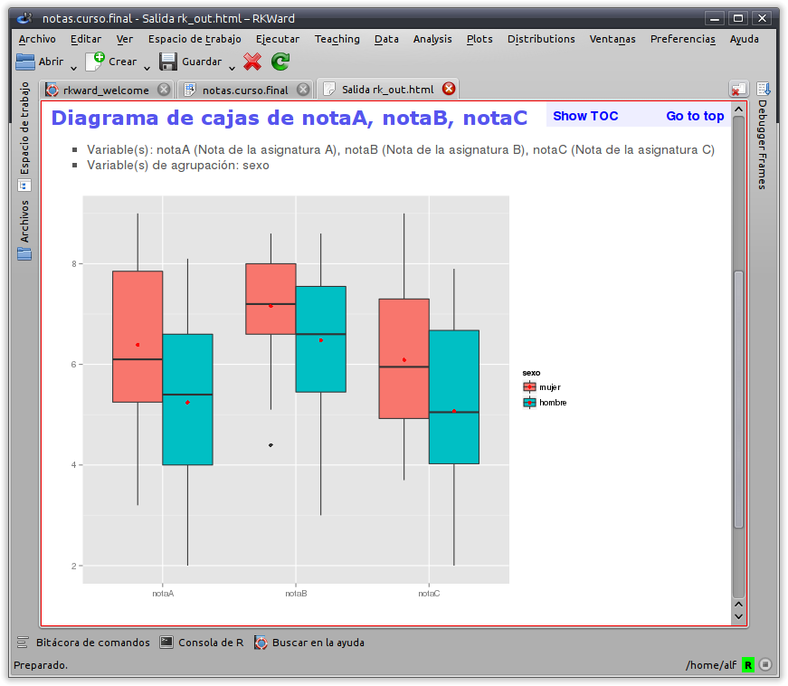
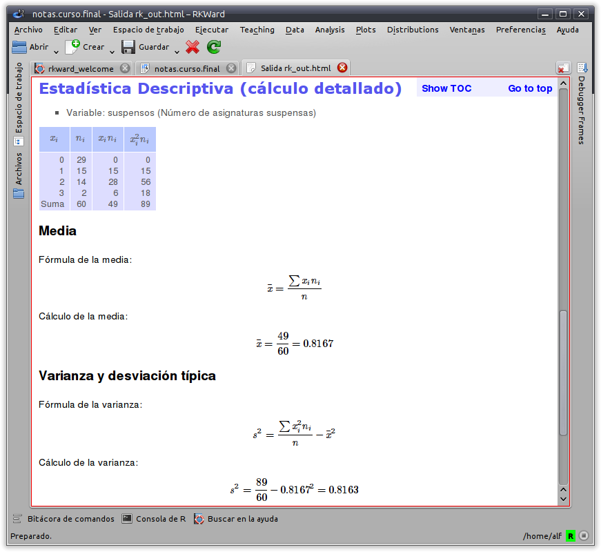

¿Qué es RKTeaching?
RKTeaching es un paquete de R que proporciona un plugin para la interfaz gráfica RKWard añadiendo nuevos menús y cuadros de diálogo especialmente diseñandos para la enseñanza de Estadística.
El paquete ha sido desarrollado y es mantenido por Alfredo Sánchez Alberca asalber@ceu.es del Departamento de Matemáticas de la Universidad San Pablo CEU de Madrid.
Si descubre algún error o tiene cualquier sugerencia, por favor, envíeselo al autor.
Instalación
Requisitos previos:
- Tener instalado R. Puede descargarse desde http://www.r-project.org/.
- Tener instalado RKWard. Puede descargarse desde http://rkward.sourceforge.net/.
Para instalar RKTeaching deben seguirse los mismos pasos que para instalar cualquier paquete de R:
- Descargar el paquete rk.Teaching de aquí y guardarlo en el directorio descargas.
- Arrancar R.
- Establecer como directorio de trabajo el directorio descargas donde se ha descargado el paquete:
setwd("ruta_a_descargas") - Instalarlo en R mediante el comando:
install.packages("rk.Teaching",repos=NULL,dep=True)
Procedimientos estadísticos
Una vez instalado, al arrancar RKWard aparecerá un nuevo menú Teaching con los siguientes procedimientos estadísticos:
- Manipulación de datos
- Filtrar datos
- Calcular variable
- Recodificar variable
- Ponderar datos
- Tipificar variables
- Distribución de frecuencias
- Tablas de frecuencias
- Tablas de frecuencias bidimensionales
- Gráficos
- Diagrama de barras
- Histograma
- Diagrama de sectores
- Diagrama de caja
- Diagrama de medias
- Diagrama de interacción
- Diagrama de dispersión
- Matriz de dispersión
- Estadística descriptiva
- Estadísticos
- Estadísticos (cálculo detallado)
- Regresión
- Regresión lineal
- Regresión no lineal
- Comparación de modelos
- Predicciones
- Correlación
- Test paramétricos
- Medias
- Test T para una muestra
- Test T para dos muestras independientes
- Test T para dos muestras pareadas
- ANOVA
- Cálculo del tamaño muestral para la media
- Cálculo del tamaño muestral para el test T
- Varianzas
- Test F de Fisher
- Test de Levene
- Proporciones
- Test para una proporción
- Test para dos proporciones
- Cálculo del tamaño muestral para una proproción
- Test no paramétricos
- Normalidad
- Test de Lilliefors (Komogorov-Smirnov)
- Test de Shapiro-Wilk
- Test U de Mann-Whitney para dos muestas independientes
- Test de Wilcoxon para dos muestras pareadas
- Test de Kruskal-Wallis para varias muestras independientes
- Test de Friedman para medidas repetidas
- Test Chi-cuadrado de independencia
- Test Chi-cuadrado de bondad de ajuste
- Concordancia
- Coeficiente de correlación intraclase
- Kappa de Cohen
- Distribuciones de probabilidad
- Distribuciones discretas
- Binomial
- Probabilidades
- Cuantiles
- Gráfico de probabilidad
- Poisson
- Probabilidades
- Cuantiles
- Gráfico de probabilidad
- Distribuciones continuas
- Chi-cuadrado
- Probabilidades
- Cuantiles
- Gráfico de probabilidad
- F de Fisher
- Probabilidades
- Cuantiles
- Gráfico de probabilidad
- Normal
- Probabilidades
- Cuantiles
- Gráfico de probabilidad
- T de student
- Probabilidades
- Cuantiles
- Gráfico de probabilidad
- Uniforme continua
- Probabilidades
- Cuantiles
- Gráfico de probabilidad
- Simulaciones
- Lanzamiento de monedas
- Lanzamiento de dados
- Ley de los casos raros
Funcionalidades
- Menús y cuadros de diálogo diseñados para facilitar el aprendizaje, eliminando todas las opciones secundarias para conseguir una interfaz simple e intuitiva.
- Diseño de asistentes que guían al usuario paso a paso y le asesoran en los análisis estadísticos.

- Salidas en HTML que presentan los resultados de los análisis y sus interpretaciones de manera clara y concisa. 
- Gráficos sencillos basados en el moderno paquete ggplot2. 
- Posibilidad mostrar el desarrollo de los cálculos de algunos procedimientos estadísticos. 